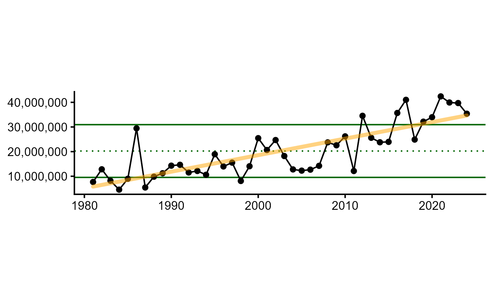
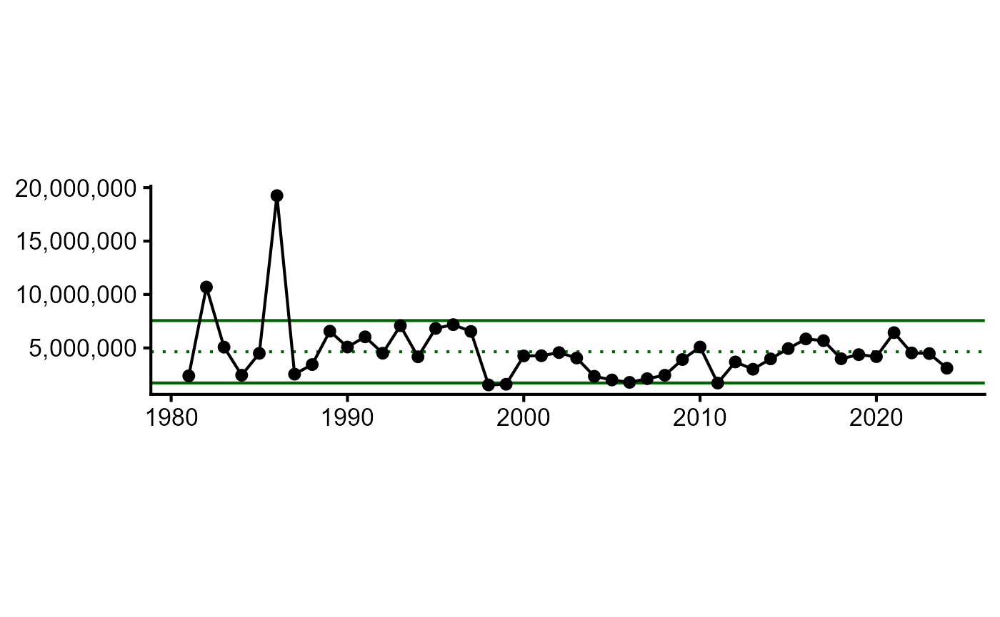

Using MRIP Data for Recreational Indicators
Stephanie Owen & Abigail Tyrell
Source:vignettes/using_mrip_data.Rmd
using_mrip_data.RmdObtaining MRIP Data
Data pulls from NOAA Fisheries’ Marine Recreational Information Program (MRIP) can be done through the MRIP Query Tool website.
Alternatively, queries for recreational trips, catch, and landings can be performed using the functions in this package.
This vignette shows example data pulls and plots used for Black Sea Bass:
Total Recreational Catch and Landings
Total Recreational Trips
Black Sea Bass Recreational Catch and Landings
Pull data
Get recreational catch data for Black Sea Bass using the
get_mrip_catch function. The type argument can
be set to “all” for all catch types (A, B1, B2) or “landings” for just
the landings (A and B1).
bsb_catch <- get_mrip_catch(species = "BLACK SEA BASS",
type = "all",
region = "north and mid-atlantic")
head(bsb_catch)## $data
## Estimate Status Year Fishing Year Common Name
## 1 FINAL 1981 CALENDAR YEAR (JAN 1 - DEC 31) BLACK SEA BASS
## 2 FINAL 1982 CALENDAR YEAR (JAN 1 - DEC 31) BLACK SEA BASS
## 3 FINAL 1983 CALENDAR YEAR (JAN 1 - DEC 31) BLACK SEA BASS
## 4 FINAL 1984 CALENDAR YEAR (JAN 1 - DEC 31) BLACK SEA BASS
## 5 FINAL 1985 CALENDAR YEAR (JAN 1 - DEC 31) BLACK SEA BASS
## 6 FINAL 1986 CALENDAR YEAR (JAN 1 - DEC 31) BLACK SEA BASS
## 7 FINAL 1987 CALENDAR YEAR (JAN 1 - DEC 31) BLACK SEA BASS
## 8 FINAL 1988 CALENDAR YEAR (JAN 1 - DEC 31) BLACK SEA BASS
## 9 FINAL 1989 CALENDAR YEAR (JAN 1 - DEC 31) BLACK SEA BASS
## 10 FINAL 1990 CALENDAR YEAR (JAN 1 - DEC 31) BLACK SEA BASS
## 11 FINAL 1991 CALENDAR YEAR (JAN 1 - DEC 31) BLACK SEA BASS
## 12 FINAL 1992 CALENDAR YEAR (JAN 1 - DEC 31) BLACK SEA BASS
## 13 FINAL 1993 CALENDAR YEAR (JAN 1 - DEC 31) BLACK SEA BASS
## 14 FINAL 1994 CALENDAR YEAR (JAN 1 - DEC 31) BLACK SEA BASS
## 15 FINAL 1995 CALENDAR YEAR (JAN 1 - DEC 31) BLACK SEA BASS
## 16 FINAL 1996 CALENDAR YEAR (JAN 1 - DEC 31) BLACK SEA BASS
## 17 FINAL 1997 CALENDAR YEAR (JAN 1 - DEC 31) BLACK SEA BASS
## 18 FINAL 1998 CALENDAR YEAR (JAN 1 - DEC 31) BLACK SEA BASS
## 19 FINAL 1999 CALENDAR YEAR (JAN 1 - DEC 31) BLACK SEA BASS
## 20 FINAL 2000 CALENDAR YEAR (JAN 1 - DEC 31) BLACK SEA BASS
## 21 FINAL 2001 CALENDAR YEAR (JAN 1 - DEC 31) BLACK SEA BASS
## 22 FINAL 2002 CALENDAR YEAR (JAN 1 - DEC 31) BLACK SEA BASS
## 23 FINAL 2003 CALENDAR YEAR (JAN 1 - DEC 31) BLACK SEA BASS
## 24 FINAL 2004 CALENDAR YEAR (JAN 1 - DEC 31) BLACK SEA BASS
## 25 FINAL 2005 CALENDAR YEAR (JAN 1 - DEC 31) BLACK SEA BASS
## 26 FINAL 2006 CALENDAR YEAR (JAN 1 - DEC 31) BLACK SEA BASS
## 27 FINAL 2007 CALENDAR YEAR (JAN 1 - DEC 31) BLACK SEA BASS
## 28 FINAL 2008 CALENDAR YEAR (JAN 1 - DEC 31) BLACK SEA BASS
## 29 FINAL 2009 CALENDAR YEAR (JAN 1 - DEC 31) BLACK SEA BASS
## 30 FINAL 2010 CALENDAR YEAR (JAN 1 - DEC 31) BLACK SEA BASS
## 31 FINAL 2011 CALENDAR YEAR (JAN 1 - DEC 31) BLACK SEA BASS
## 32 FINAL 2012 CALENDAR YEAR (JAN 1 - DEC 31) BLACK SEA BASS
## 33 FINAL 2013 CALENDAR YEAR (JAN 1 - DEC 31) BLACK SEA BASS
## 34 FINAL 2014 CALENDAR YEAR (JAN 1 - DEC 31) BLACK SEA BASS
## 35 FINAL 2015 CALENDAR YEAR (JAN 1 - DEC 31) BLACK SEA BASS
## 36 FINAL 2016 CALENDAR YEAR (JAN 1 - DEC 31) BLACK SEA BASS
## 37 FINAL 2017 CALENDAR YEAR (JAN 1 - DEC 31) BLACK SEA BASS
## 38 FINAL 2018 CALENDAR YEAR (JAN 1 - DEC 31) BLACK SEA BASS
## 39 FINAL 2019 CALENDAR YEAR (JAN 1 - DEC 31) BLACK SEA BASS
## 40 FINAL 2020 CALENDAR YEAR (JAN 1 - DEC 31) BLACK SEA BASS
## 41 FINAL 2021 CALENDAR YEAR (JAN 1 - DEC 31) BLACK SEA BASS
## 42 FINAL 2022 CALENDAR YEAR (JAN 1 - DEC 31) BLACK SEA BASS
## 43 FINAL 2023 CALENDAR YEAR (JAN 1 - DEC 31) BLACK SEA BASS
## 44 FINAL 2024 CALENDAR YEAR (JAN 1 - DEC 31) BLACK SEA BASS
## Cumulative Through PSE Total Catch (A+B1+B2)
## 1 ANNUAL 49.3
## 2 ANNUAL 14.7
## 3 ANNUAL 13.3
## 4 ANNUAL 21.8
## 5 ANNUAL 10.8
## 6 ANNUAL 16.4
## 7 ANNUAL 14.5
## 8 ANNUAL 12.1
## 9 ANNUAL 10.1
## 10 ANNUAL 11.9
## 11 ANNUAL 9.1
## 12 ANNUAL 8.9
## 13 ANNUAL 19.6
## 14 ANNUAL 15.0
## 15 ANNUAL 9.5
## 16 ANNUAL 13.6
## 17 ANNUAL 11.8
## 18 ANNUAL 9.3
## 19 ANNUAL 10.1
## 20 ANNUAL 8.0
## 21 ANNUAL 7.9
## 22 ANNUAL 8.4
## 23 ANNUAL 7.9
## 24 ANNUAL 14.2
## 25 ANNUAL 11.0
## 26 ANNUAL 9.8
## 27 ANNUAL 9.2
## 28 ANNUAL 14.4
## 29 ANNUAL 9.3
## 30 ANNUAL 21.8
## 31 ANNUAL 9.7
## 32 ANNUAL 9.1
## 33 ANNUAL 8.5
## 34 ANNUAL 7.6
## 35 ANNUAL 9.1
## 36 ANNUAL 7.9
## 37 ANNUAL 11.1
## 38 ANNUAL 5.7
## 39 ANNUAL 5.9
## 40 ANNUAL 6.9
## 41 ANNUAL 6.5
## 42 ANNUAL 5.8
## 43 ANNUAL 6.8
## 44 ANNUAL 6.0
## Does Total Catch (A+B1+B2) Meet MRIP Standard
## 1 CAUTION
## 2 YES
## 3 YES
## 4 YES
## 5 YES
## 6 YES
## 7 YES
## 8 YES
## 9 YES
## 10 YES
## 11 YES
## 12 YES
## 13 YES
## 14 YES
## 15 YES
## 16 YES
## 17 YES
## 18 YES
## 19 YES
## 20 YES
## 21 YES
## 22 YES
## 23 YES
## 24 YES
## 25 YES
## 26 YES
## 27 YES
## 28 YES
## 29 YES
## 30 YES
## 31 YES
## 32 YES
## 33 YES
## 34 YES
## 35 YES
## 36 YES
## 37 YES
## 38 YES
## 39 YES
## 40 YES
## 41 YES
## 42 YES
## 43 YES
## 44 YES
## Is Total Catch (A+B1+B2) Significantly Different From 0
## 1 YES
## 2 YES
## 3 YES
## 4 YES
## 5 YES
## 6 YES
## 7 YES
## 8 YES
## 9 YES
## 10 YES
## 11 YES
## 12 YES
## 13 YES
## 14 YES
## 15 YES
## 16 YES
## 17 YES
## 18 YES
## 19 YES
## 20 YES
## 21 YES
## 22 YES
## 23 YES
## 24 YES
## 25 YES
## 26 YES
## 27 YES
## 28 YES
## 29 YES
## 30 YES
## 31 YES
## 32 YES
## 33 YES
## 34 YES
## 35 YES
## 36 YES
## 37 YES
## 38 YES
## 39 YES
## 40 YES
## 41 YES
## 42 YES
## 43 YES
## 44 YES
## Total Catch (A+B1+B2) Total Catch (A+B1+B2) Lower 95% Confidence Limit
## 1 7,680,855 258,998
## 2 12,824,985 9,129,850
## 3 8,172,372 6,041,998
## 4 4,566,246 2,615,181
## 5 8,973,265 7,073,804
## 6 29,444,111 19,979,596
## 7 5,437,007 3,891,810
## 8 9,823,266 7,493,581
## 9 11,220,984 8,999,678
## 10 14,299,771 10,964,493
## 11 14,650,865 12,037,737
## 12 11,529,198 9,518,045
## 13 12,148,525 7,481,548
## 14 10,601,576 7,484,713
## 15 18,936,151 15,410,240
## 16 13,978,797 10,252,609
## 17 15,530,507 11,938,611
## 18 8,088,316 6,613,978
## 19 14,062,049 11,278,326
## 20 25,458,839 21,466,893
## 21 20,652,610 17,454,760
## 22 24,699,570 20,633,033
## 23 18,204,338 15,385,578
## 24 12,774,217 9,218,897
## 25 12,281,428 9,633,553
## 26 12,678,946 10,243,574
## 27 14,233,595 11,666,993
## 28 23,765,583 17,057,985
## 29 22,575,126 18,460,132
## 30 26,195,386 15,002,621
## 31 12,133,735 9,826,869
## 32 34,534,029 28,374,539
## 33 25,614,135 21,346,820
## 34 23,793,895 20,249,556
## 35 23,958,028 19,684,874
## 36 35,686,925 30,161,162
## 37 41,018,183 32,094,267
## 38 24,887,613 22,107,169
## 39 32,158,337 28,439,547
## 40 33,965,530 29,372,032
## 41 42,417,488 37,013,500
## 42 39,936,904 35,396,876
## 43 39,708,143 34,415,841
## 44 35,377,908 31,217,466
## Total Catch (A+B1+B2) Upper 95% Confidence Limit
## 1 15,102,712
## 2 16,520,119
## 3 10,302,746
## 4 6,517,312
## 5 10,872,726
## 6 38,908,626
## 7 6,982,204
## 8 12,152,952
## 9 13,442,290
## 10 17,635,050
## 11 17,263,993
## 12 13,540,351
## 13 16,815,503
## 14 13,718,439
## 15 22,462,062
## 16 17,704,985
## 17 19,122,402
## 18 9,562,654
## 19 16,845,773
## 20 29,450,785
## 21 23,850,460
## 22 28,766,107
## 23 21,023,098
## 24 16,329,538
## 25 14,929,305
## 26 15,114,318
## 27 16,800,196
## 28 30,473,182
## 29 26,690,119
## 30 37,388,150
## 31 14,440,601
## 32 40,693,518
## 33 29,881,450
## 34 27,338,234
## 35 28,231,182
## 36 41,212,688
## 37 49,942,099
## 38 27,668,057
## 39 35,877,128
## 40 38,559,028
## 41 47,821,476
## 42 44,476,931
## 43 45,000,444
## 44 39,538,350
## ** Contribution of Imputed Data to Total Catch Rate SPECIES
## 1 0% BLACK SEA BASS
## 2 0% BLACK SEA BASS
## 3 0% BLACK SEA BASS
## 4 0% BLACK SEA BASS
## 5 0% BLACK SEA BASS
## 6 0% BLACK SEA BASS
## 7 0% BLACK SEA BASS
## 8 0% BLACK SEA BASS
## 9 0% BLACK SEA BASS
## 10 0% BLACK SEA BASS
## 11 0% BLACK SEA BASS
## 12 0% BLACK SEA BASS
## 13 0% BLACK SEA BASS
## 14 0% BLACK SEA BASS
## 15 0% BLACK SEA BASS
## 16 0% BLACK SEA BASS
## 17 0% BLACK SEA BASS
## 18 0% BLACK SEA BASS
## 19 0% BLACK SEA BASS
## 20 0% BLACK SEA BASS
## 21 0% BLACK SEA BASS
## 22 0% BLACK SEA BASS
## 23 0% BLACK SEA BASS
## 24 0% BLACK SEA BASS
## 25 0% BLACK SEA BASS
## 26 0% BLACK SEA BASS
## 27 0% BLACK SEA BASS
## 28 0% BLACK SEA BASS
## 29 0% BLACK SEA BASS
## 30 0% BLACK SEA BASS
## 31 0% BLACK SEA BASS
## 32 0% BLACK SEA BASS
## 33 0% BLACK SEA BASS
## 34 0% BLACK SEA BASS
## 35 0% BLACK SEA BASS
## 36 0% BLACK SEA BASS
## 37 0% BLACK SEA BASS
## 38 0% BLACK SEA BASS
## 39 0% BLACK SEA BASS
## 40 14% BLACK SEA BASS
## 41 1% BLACK SEA BASS
## 42 0% BLACK SEA BASS
## 43 0% BLACK SEA BASS
## 44 0% BLACK SEA BASS
## REGION
## 1 NORTH AND MID-ATLANTIC
## 2 NORTH AND MID-ATLANTIC
## 3 NORTH AND MID-ATLANTIC
## 4 NORTH AND MID-ATLANTIC
## 5 NORTH AND MID-ATLANTIC
## 6 NORTH AND MID-ATLANTIC
## 7 NORTH AND MID-ATLANTIC
## 8 NORTH AND MID-ATLANTIC
## 9 NORTH AND MID-ATLANTIC
## 10 NORTH AND MID-ATLANTIC
## 11 NORTH AND MID-ATLANTIC
## 12 NORTH AND MID-ATLANTIC
## 13 NORTH AND MID-ATLANTIC
## 14 NORTH AND MID-ATLANTIC
## 15 NORTH AND MID-ATLANTIC
## 16 NORTH AND MID-ATLANTIC
## 17 NORTH AND MID-ATLANTIC
## 18 NORTH AND MID-ATLANTIC
## 19 NORTH AND MID-ATLANTIC
## 20 NORTH AND MID-ATLANTIC
## 21 NORTH AND MID-ATLANTIC
## 22 NORTH AND MID-ATLANTIC
## 23 NORTH AND MID-ATLANTIC
## 24 NORTH AND MID-ATLANTIC
## 25 NORTH AND MID-ATLANTIC
## 26 NORTH AND MID-ATLANTIC
## 27 NORTH AND MID-ATLANTIC
## 28 NORTH AND MID-ATLANTIC
## 29 NORTH AND MID-ATLANTIC
## 30 NORTH AND MID-ATLANTIC
## 31 NORTH AND MID-ATLANTIC
## 32 NORTH AND MID-ATLANTIC
## 33 NORTH AND MID-ATLANTIC
## 34 NORTH AND MID-ATLANTIC
## 35 NORTH AND MID-ATLANTIC
## 36 NORTH AND MID-ATLANTIC
## 37 NORTH AND MID-ATLANTIC
## 38 NORTH AND MID-ATLANTIC
## 39 NORTH AND MID-ATLANTIC
## 40 NORTH AND MID-ATLANTIC
## 41 NORTH AND MID-ATLANTIC
## 42 NORTH AND MID-ATLANTIC
## 43 NORTH AND MID-ATLANTIC
## 44 NORTH AND MID-ATLANTIC
##
## $metadata
## X2
## 1
## 2 Your Query Parameters:
## 3 Query:
## 4 Year:
## 5 Summarize By:
## 6 Fishing Year:
## 7 Species:
## 8 Geographic Area:
## 9 Fishing Mode:
## 10 Fishing Area:
## 11 Type of Catch:
## 12 Information:
## 13 Notes on Query Results: MRIP does not support the use of estimates with a percent standard error above 50 and in those instances, recommends considering higher levels of aggregation (e.g., across states, geographic regions, or fishing modes).Due to COVID-related disruptions to the Access Point Angler Intercept Survey and subsequent gaps in catch records, some catch estimates are based in part on imputed data. Columns labeled 'Contribution of Imputed Data to {ESTIMATE} rate' represent the weighted percentage of catch rate information that can be attributed to imputed catch data. Note: This does *not* represent the percent difference between the estimate with and without imputed data incorporated. If no such column appears in your query results, no imputed data were used.Estimates for Hawaii (prior to 2023) and Puerto Rico (prior to 2014) are based on Marine Recreational Fisheries Statistics Survey methodology and have not been calibrated. Beginning in 2023, estimates for Hawaii are produced using certified MRIP survey designs and weighted estimation methods.
## X3
## 1
## 2 Your Query Parameters:
## 3 MRIP CATCH TIME SERIES
## 4 1981 - 2024
## 5 ANNUAL
## 6 CALENDAR YEAR (JANUARY 1 - DECEMBER 31)
## 7 BLACK SEA BASS
## 8 NORTH AND MID-ATLANTIC
## 9 ALL MODES COMBINED
## 10 ALL AREAS COMBINED
## 11 TOTAL CATCH (TYPE A + B1 + B2)
## 12 NUMBERS OF FISH
## 13 Notes on Query Results: MRIP does not support the use of estimates with a percent standard error above 50 and in those instances, recommends considering higher levels of aggregation (e.g., across states, geographic regions, or fishing modes).Due to COVID-related disruptions to the Access Point Angler Intercept Survey and subsequent gaps in catch records, some catch estimates are based in part on imputed data. Columns labeled 'Contribution of Imputed Data to {ESTIMATE} rate' represent the weighted percentage of catch rate information that can be attributed to imputed catch data. Note: This does *not* represent the percent difference between the estimate with and without imputed data incorporated. If no such column appears in your query results, no imputed data were used.Estimates for Hawaii (prior to 2023) and Puerto Rico (prior to 2014) are based on Marine Recreational Fisheries Statistics Survey methodology and have not been calibrated. Beginning in 2023, estimates for Hawaii are produced using certified MRIP survey designs and weighted estimation methods.
##
## $url
## [1] "https://www.st.nmfs.noaa.gov/SASStoredProcess/guest?_program=%2F%2FFoundation%2FSTP%2Fmrip_series_catch&qyearfrom=1981&qyearto=2024&qsummary=cumulative_pya&qwave=1&fshyr=annual&qstate=NORTH+AND+MID-ATLANTIC&qspecies=BLACK%20SEA%20BASS&qmode_fx=ALL+MODES+COMBINED&qarea_x=ALL+AREAS+COMBINED&qcatch_type=TOTAL+CATCH+%28TYPE+A+%2B+B1+%2B+B2%29&qdata_type=NUMBERS+OF+FISH&qoutput_type=TABLE&qsource=PRODUCTION"
bsb_landings <- get_mrip_catch(species = "BLACK SEA BASS",
type = "landings",
region = "north and mid-atlantic")
head(bsb_landings)## $data
## Estimate Status Year Fishing Year Common Name
## 1 FINAL 1981 CALENDAR YEAR (JAN 1 - DEC 31) BLACK SEA BASS
## 2 FINAL 1982 CALENDAR YEAR (JAN 1 - DEC 31) BLACK SEA BASS
## 3 FINAL 1983 CALENDAR YEAR (JAN 1 - DEC 31) BLACK SEA BASS
## 4 FINAL 1984 CALENDAR YEAR (JAN 1 - DEC 31) BLACK SEA BASS
## 5 FINAL 1985 CALENDAR YEAR (JAN 1 - DEC 31) BLACK SEA BASS
## 6 FINAL 1986 CALENDAR YEAR (JAN 1 - DEC 31) BLACK SEA BASS
## 7 FINAL 1987 CALENDAR YEAR (JAN 1 - DEC 31) BLACK SEA BASS
## 8 FINAL 1988 CALENDAR YEAR (JAN 1 - DEC 31) BLACK SEA BASS
## 9 FINAL 1989 CALENDAR YEAR (JAN 1 - DEC 31) BLACK SEA BASS
## 10 FINAL 1990 CALENDAR YEAR (JAN 1 - DEC 31) BLACK SEA BASS
## 11 FINAL 1991 CALENDAR YEAR (JAN 1 - DEC 31) BLACK SEA BASS
## 12 FINAL 1992 CALENDAR YEAR (JAN 1 - DEC 31) BLACK SEA BASS
## 13 FINAL 1993 CALENDAR YEAR (JAN 1 - DEC 31) BLACK SEA BASS
## 14 FINAL 1994 CALENDAR YEAR (JAN 1 - DEC 31) BLACK SEA BASS
## 15 FINAL 1995 CALENDAR YEAR (JAN 1 - DEC 31) BLACK SEA BASS
## 16 FINAL 1996 CALENDAR YEAR (JAN 1 - DEC 31) BLACK SEA BASS
## 17 FINAL 1997 CALENDAR YEAR (JAN 1 - DEC 31) BLACK SEA BASS
## 18 FINAL 1998 CALENDAR YEAR (JAN 1 - DEC 31) BLACK SEA BASS
## 19 FINAL 1999 CALENDAR YEAR (JAN 1 - DEC 31) BLACK SEA BASS
## 20 FINAL 2000 CALENDAR YEAR (JAN 1 - DEC 31) BLACK SEA BASS
## 21 FINAL 2001 CALENDAR YEAR (JAN 1 - DEC 31) BLACK SEA BASS
## 22 FINAL 2002 CALENDAR YEAR (JAN 1 - DEC 31) BLACK SEA BASS
## 23 FINAL 2003 CALENDAR YEAR (JAN 1 - DEC 31) BLACK SEA BASS
## 24 FINAL 2004 CALENDAR YEAR (JAN 1 - DEC 31) BLACK SEA BASS
## 25 FINAL 2005 CALENDAR YEAR (JAN 1 - DEC 31) BLACK SEA BASS
## 26 FINAL 2006 CALENDAR YEAR (JAN 1 - DEC 31) BLACK SEA BASS
## 27 FINAL 2007 CALENDAR YEAR (JAN 1 - DEC 31) BLACK SEA BASS
## 28 FINAL 2008 CALENDAR YEAR (JAN 1 - DEC 31) BLACK SEA BASS
## 29 FINAL 2009 CALENDAR YEAR (JAN 1 - DEC 31) BLACK SEA BASS
## 30 FINAL 2010 CALENDAR YEAR (JAN 1 - DEC 31) BLACK SEA BASS
## 31 FINAL 2011 CALENDAR YEAR (JAN 1 - DEC 31) BLACK SEA BASS
## 32 FINAL 2012 CALENDAR YEAR (JAN 1 - DEC 31) BLACK SEA BASS
## 33 FINAL 2013 CALENDAR YEAR (JAN 1 - DEC 31) BLACK SEA BASS
## 34 FINAL 2014 CALENDAR YEAR (JAN 1 - DEC 31) BLACK SEA BASS
## 35 FINAL 2015 CALENDAR YEAR (JAN 1 - DEC 31) BLACK SEA BASS
## 36 FINAL 2016 CALENDAR YEAR (JAN 1 - DEC 31) BLACK SEA BASS
## 37 FINAL 2017 CALENDAR YEAR (JAN 1 - DEC 31) BLACK SEA BASS
## 38 FINAL 2018 CALENDAR YEAR (JAN 1 - DEC 31) BLACK SEA BASS
## 39 FINAL 2019 CALENDAR YEAR (JAN 1 - DEC 31) BLACK SEA BASS
## 40 FINAL 2020 CALENDAR YEAR (JAN 1 - DEC 31) BLACK SEA BASS
## 41 FINAL 2021 CALENDAR YEAR (JAN 1 - DEC 31) BLACK SEA BASS
## 42 FINAL 2022 CALENDAR YEAR (JAN 1 - DEC 31) BLACK SEA BASS
## 43 FINAL 2023 CALENDAR YEAR (JAN 1 - DEC 31) BLACK SEA BASS
## 44 FINAL 2024 CALENDAR YEAR (JAN 1 - DEC 31) BLACK SEA BASS
## Cumulative Through PSE Total Harvest (A+B1)
## 1 ANNUAL 24.3
## 2 ANNUAL 16.2
## 3 ANNUAL 16.5
## 4 ANNUAL 23.3
## 5 ANNUAL 13.9
## 6 ANNUAL 22.5
## 7 ANNUAL 23.6
## 8 ANNUAL 15.4
## 9 ANNUAL 14.4
## 10 ANNUAL 16.7
## 11 ANNUAL 11.7
## 12 ANNUAL 11.9
## 13 ANNUAL 27.2
## 14 ANNUAL 24.9
## 15 ANNUAL 13.8
## 16 ANNUAL 19.2
## 17 ANNUAL 16.4
## 18 ANNUAL 16.6
## 19 ANNUAL 23.8
## 20 ANNUAL 11.7
## 21 ANNUAL 18.0
## 22 ANNUAL 11.8
## 23 ANNUAL 11.1
## 24 ANNUAL 18.2
## 25 ANNUAL 16.7
## 26 ANNUAL 14.1
## 27 ANNUAL 12.0
## 28 ANNUAL 24.4
## 29 ANNUAL 12.5
## 30 ANNUAL 21.2
## 31 ANNUAL 14.1
## 32 ANNUAL 12.6
## 33 ANNUAL 13.4
## 34 ANNUAL 11.3
## 35 ANNUAL 10.5
## 36 ANNUAL 11.1
## 37 ANNUAL 17.0
## 38 ANNUAL 7.7
## 39 ANNUAL 7.5
## 40 ANNUAL 7.0
## 41 ANNUAL 8.6
## 42 ANNUAL 9.9
## 43 ANNUAL 9.5
## 44 ANNUAL 8.7
## Does Total Harvest (A+B1) Meet MRIP Standard
## 1 YES
## 2 YES
## 3 YES
## 4 YES
## 5 YES
## 6 YES
## 7 YES
## 8 YES
## 9 YES
## 10 YES
## 11 YES
## 12 YES
## 13 YES
## 14 YES
## 15 YES
## 16 YES
## 17 YES
## 18 YES
## 19 YES
## 20 YES
## 21 YES
## 22 YES
## 23 YES
## 24 YES
## 25 YES
## 26 YES
## 27 YES
## 28 YES
## 29 YES
## 30 YES
## 31 YES
## 32 YES
## 33 YES
## 34 YES
## 35 YES
## 36 YES
## 37 YES
## 38 YES
## 39 YES
## 40 YES
## 41 YES
## 42 YES
## 43 YES
## 44 YES
## Is Total Harvest (A+B1) Significantly Different From 0 Total Harvest (A+B1)
## 1 YES 2,387,527
## 2 YES 10,696,079
## 3 YES 5,075,429
## 4 YES 2,447,169
## 5 YES 4,491,941
## 6 YES 19,254,567
## 7 YES 2,542,841
## 8 YES 3,442,937
## 9 YES 6,566,698
## 10 YES 5,082,539
## 11 YES 6,037,483
## 12 YES 4,503,133
## 13 YES 7,080,512
## 14 YES 4,169,397
## 15 YES 6,824,826
## 16 YES 7,178,616
## 17 YES 6,542,329
## 18 YES 1,539,044
## 19 YES 1,599,732
## 20 YES 4,252,068
## 21 YES 4,269,251
## 22 YES 4,565,377
## 23 YES 4,056,050
## 24 YES 2,345,446
## 25 YES 2,000,584
## 26 YES 1,777,425
## 27 YES 2,118,952
## 28 YES 2,444,136
## 29 YES 3,913,348
## 30 YES 5,084,577
## 31 YES 1,709,310
## 32 YES 3,686,565
## 33 YES 3,005,414
## 34 YES 3,974,106
## 35 YES 4,938,583
## 36 YES 5,840,274
## 37 YES 5,680,470
## 38 YES 3,985,866
## 39 YES 4,371,221
## 40 YES 4,183,382
## 41 YES 6,431,419
## 42 YES 4,533,070
## 43 YES 4,470,960
## 44 YES 3,101,277
## Total Harvest (A+B1) Lower 95% Confidence Limit
## 1 1,250,396
## 2 7,299,860
## 3 3,434,035
## 4 1,329,596
## 5 3,268,157
## 6 10,763,303
## 7 1,366,624
## 8 2,403,721
## 9 4,713,313
## 10 3,418,922
## 11 4,652,967
## 12 3,452,822
## 13 3,305,749
## 14 2,134,564
## 15 4,978,847
## 16 4,477,159
## 17 4,439,363
## 18 1,038,301
## 19 853,489
## 20 3,276,984
## 21 2,763,059
## 22 3,509,497
## 23 3,173,616
## 24 1,508,778
## 25 1,345,753
## 26 1,286,216
## 27 1,620,575
## 28 1,275,253
## 29 2,954,578
## 30 2,971,834
## 31 1,236,925
## 32 2,776,131
## 33 2,216,072
## 34 3,093,921
## 35 3,922,223
## 36 4,569,664
## 37 3,787,737
## 38 3,384,319
## 39 3,728,652
## 40 3,609,422
## 41 5,347,339
## 42 3,653,473
## 43 3,638,467
## 44 2,572,447
## Total Harvest (A+B1) Upper 95% Confidence Limit
## 1 3,524,658
## 2 14,092,297
## 3 6,716,823
## 4 3,564,742
## 5 5,715,726
## 6 27,745,831
## 7 3,719,057
## 8 4,482,153
## 9 8,420,083
## 10 6,746,155
## 11 7,421,999
## 12 5,553,444
## 13 10,855,275
## 14 6,204,229
## 15 8,670,806
## 16 9,880,073
## 17 8,645,296
## 18 2,039,788
## 19 2,345,975
## 20 5,227,152
## 21 5,775,443
## 22 5,621,258
## 23 4,938,484
## 24 3,182,113
## 25 2,655,415
## 26 2,268,634
## 27 2,617,330
## 28 3,613,020
## 29 4,872,119
## 30 7,197,321
## 31 2,181,694
## 32 4,596,999
## 33 3,794,756
## 34 4,854,291
## 35 5,954,943
## 36 7,110,884
## 37 7,573,202
## 38 4,587,413
## 39 5,013,791
## 40 4,757,342
## 41 7,515,499
## 42 5,412,666
## 43 5,303,453
## 44 3,630,107
## ** Contribution of Imputed Data to Total Harvest Rate SPECIES
## 1 0% BLACK SEA BASS
## 2 0% BLACK SEA BASS
## 3 0% BLACK SEA BASS
## 4 0% BLACK SEA BASS
## 5 0% BLACK SEA BASS
## 6 0% BLACK SEA BASS
## 7 0% BLACK SEA BASS
## 8 0% BLACK SEA BASS
## 9 0% BLACK SEA BASS
## 10 0% BLACK SEA BASS
## 11 0% BLACK SEA BASS
## 12 0% BLACK SEA BASS
## 13 0% BLACK SEA BASS
## 14 0% BLACK SEA BASS
## 15 0% BLACK SEA BASS
## 16 0% BLACK SEA BASS
## 17 0% BLACK SEA BASS
## 18 0% BLACK SEA BASS
## 19 0% BLACK SEA BASS
## 20 0% BLACK SEA BASS
## 21 0% BLACK SEA BASS
## 22 0% BLACK SEA BASS
## 23 0% BLACK SEA BASS
## 24 0% BLACK SEA BASS
## 25 0% BLACK SEA BASS
## 26 0% BLACK SEA BASS
## 27 0% BLACK SEA BASS
## 28 0% BLACK SEA BASS
## 29 0% BLACK SEA BASS
## 30 0% BLACK SEA BASS
## 31 0% BLACK SEA BASS
## 32 0% BLACK SEA BASS
## 33 0% BLACK SEA BASS
## 34 0% BLACK SEA BASS
## 35 0% BLACK SEA BASS
## 36 0% BLACK SEA BASS
## 37 0% BLACK SEA BASS
## 38 0% BLACK SEA BASS
## 39 0% BLACK SEA BASS
## 40 22% BLACK SEA BASS
## 41 1% BLACK SEA BASS
## 42 0% BLACK SEA BASS
## 43 0% BLACK SEA BASS
## 44 0% BLACK SEA BASS
## REGION
## 1 NORTH AND MID-ATLANTIC
## 2 NORTH AND MID-ATLANTIC
## 3 NORTH AND MID-ATLANTIC
## 4 NORTH AND MID-ATLANTIC
## 5 NORTH AND MID-ATLANTIC
## 6 NORTH AND MID-ATLANTIC
## 7 NORTH AND MID-ATLANTIC
## 8 NORTH AND MID-ATLANTIC
## 9 NORTH AND MID-ATLANTIC
## 10 NORTH AND MID-ATLANTIC
## 11 NORTH AND MID-ATLANTIC
## 12 NORTH AND MID-ATLANTIC
## 13 NORTH AND MID-ATLANTIC
## 14 NORTH AND MID-ATLANTIC
## 15 NORTH AND MID-ATLANTIC
## 16 NORTH AND MID-ATLANTIC
## 17 NORTH AND MID-ATLANTIC
## 18 NORTH AND MID-ATLANTIC
## 19 NORTH AND MID-ATLANTIC
## 20 NORTH AND MID-ATLANTIC
## 21 NORTH AND MID-ATLANTIC
## 22 NORTH AND MID-ATLANTIC
## 23 NORTH AND MID-ATLANTIC
## 24 NORTH AND MID-ATLANTIC
## 25 NORTH AND MID-ATLANTIC
## 26 NORTH AND MID-ATLANTIC
## 27 NORTH AND MID-ATLANTIC
## 28 NORTH AND MID-ATLANTIC
## 29 NORTH AND MID-ATLANTIC
## 30 NORTH AND MID-ATLANTIC
## 31 NORTH AND MID-ATLANTIC
## 32 NORTH AND MID-ATLANTIC
## 33 NORTH AND MID-ATLANTIC
## 34 NORTH AND MID-ATLANTIC
## 35 NORTH AND MID-ATLANTIC
## 36 NORTH AND MID-ATLANTIC
## 37 NORTH AND MID-ATLANTIC
## 38 NORTH AND MID-ATLANTIC
## 39 NORTH AND MID-ATLANTIC
## 40 NORTH AND MID-ATLANTIC
## 41 NORTH AND MID-ATLANTIC
## 42 NORTH AND MID-ATLANTIC
## 43 NORTH AND MID-ATLANTIC
## 44 NORTH AND MID-ATLANTIC
##
## $metadata
## X2
## 1
## 2 Your Query Parameters:
## 3 Query:
## 4 Year:
## 5 Summarize By:
## 6 Fishing Year:
## 7 Species:
## 8 Geographic Area:
## 9 Fishing Mode:
## 10 Fishing Area:
## 11 Type of Catch:
## 12 Information:
## 13 Notes on Query Results: MRIP does not support the use of estimates with a percent standard error above 50 and in those instances, recommends considering higher levels of aggregation (e.g., across states, geographic regions, or fishing modes).Due to COVID-related disruptions to the Access Point Angler Intercept Survey and subsequent gaps in catch records, some catch estimates are based in part on imputed data. Columns labeled 'Contribution of Imputed Data to {ESTIMATE} rate' represent the weighted percentage of catch rate information that can be attributed to imputed catch data. Note: This does *not* represent the percent difference between the estimate with and without imputed data incorporated. If no such column appears in your query results, no imputed data were used.Estimates for Hawaii (prior to 2023) and Puerto Rico (prior to 2014) are based on Marine Recreational Fisheries Statistics Survey methodology and have not been calibrated. Beginning in 2023, estimates for Hawaii are produced using certified MRIP survey designs and weighted estimation methods.
## X3
## 1
## 2 Your Query Parameters:
## 3 MRIP CATCH TIME SERIES
## 4 1981 - 2024
## 5 ANNUAL
## 6 CALENDAR YEAR (JANUARY 1 - DECEMBER 31)
## 7 BLACK SEA BASS
## 8 NORTH AND MID-ATLANTIC
## 9 ALL MODES COMBINED
## 10 ALL AREAS COMBINED
## 11 HARVEST (TYPE A + B1)
## 12 NUMBERS OF FISH
## 13 Notes on Query Results: MRIP does not support the use of estimates with a percent standard error above 50 and in those instances, recommends considering higher levels of aggregation (e.g., across states, geographic regions, or fishing modes).Due to COVID-related disruptions to the Access Point Angler Intercept Survey and subsequent gaps in catch records, some catch estimates are based in part on imputed data. Columns labeled 'Contribution of Imputed Data to {ESTIMATE} rate' represent the weighted percentage of catch rate information that can be attributed to imputed catch data. Note: This does *not* represent the percent difference between the estimate with and without imputed data incorporated. If no such column appears in your query results, no imputed data were used.Estimates for Hawaii (prior to 2023) and Puerto Rico (prior to 2014) are based on Marine Recreational Fisheries Statistics Survey methodology and have not been calibrated. Beginning in 2023, estimates for Hawaii are produced using certified MRIP survey designs and weighted estimation methods.
##
## $url
## [1] "https://www.st.nmfs.noaa.gov/SASStoredProcess/guest?_program=%2F%2FFoundation%2FSTP%2Fmrip_series_catch&qyearfrom=1981&qyearto=2024&qsummary=cumulative_pya&qwave=1&fshyr=annual&qstate=NORTH+AND+MID-ATLANTIC&qspecies=BLACK%20SEA%20BASS&qmode_fx=ALL+MODES+COMBINED&qarea_x=ALL+AREAS+COMBINED&qcatch_type=HARVEST+%28TYPE+A+%2B+B1%29&qdata_type=NUMBERS+OF+FISH&qoutput_type=TABLE&qsource=PRODUCTION"Wrangle data
The function returns a list with the data and query metadata. These
data can be used directly for analyses, with minimal data wrangling. The
data can be formatted for use in ESPs with the function
create_total_mrip().
esp_catch <- create_total_mrip(bsb_catch$data,
var_name = "catch"
)## Removing data that does not meet MRIP standards. If you want to keep this data, set `remove_non_standard = FALSE`.| YEAR | DATA_VALUE | LOWER_95_CI | UPPER_95_CI | CATEGORY | INDICATOR_TYPE | INDICATOR_NAME | INDICATOR_UNITS | SPECIES | REGION |
|---|---|---|---|---|---|---|---|---|---|
| 1981 | 7680855 | 258998 | 15102712 | Recreational | Socioeconomic | total_recreational_catch_n | n | BLACK SEA BASS | NORTH AND MID-ATLANTIC |
| 1982 | 12824985 | 9129850 | 16520119 | Recreational | Socioeconomic | total_recreational_catch_n | n | BLACK SEA BASS | NORTH AND MID-ATLANTIC |
| 1983 | 8172372 | 6041998 | 10302746 | Recreational | Socioeconomic | total_recreational_catch_n | n | BLACK SEA BASS | NORTH AND MID-ATLANTIC |
| 1984 | 4566246 | 2615181 | 6517312 | Recreational | Socioeconomic | total_recreational_catch_n | n | BLACK SEA BASS | NORTH AND MID-ATLANTIC |
| 1985 | 8973265 | 7073804 | 10872726 | Recreational | Socioeconomic | total_recreational_catch_n | n | BLACK SEA BASS | NORTH AND MID-ATLANTIC |
| 1986 | 29444111 | 19979596 | 38908626 | Recreational | Socioeconomic | total_recreational_catch_n | n | BLACK SEA BASS | NORTH AND MID-ATLANTIC |
esp_landings <- create_total_mrip(bsb_landings$data,
var_name = "landings"
)## Removing data that does not meet MRIP standards. If you want to keep this data, set `remove_non_standard = FALSE`.| YEAR | DATA_VALUE | LOWER_95_CI | UPPER_95_CI | CATEGORY | INDICATOR_TYPE | INDICATOR_NAME | INDICATOR_UNITS | SPECIES | REGION |
|---|---|---|---|---|---|---|---|---|---|
| 1981 | 2387527 | 1250396 | 3524658 | Recreational | Socioeconomic | total_recreational_landings_n | n | BLACK SEA BASS | NORTH AND MID-ATLANTIC |
| 1982 | 10696079 | 7299860 | 14092297 | Recreational | Socioeconomic | total_recreational_landings_n | n | BLACK SEA BASS | NORTH AND MID-ATLANTIC |
| 1983 | 5075429 | 3434035 | 6716823 | Recreational | Socioeconomic | total_recreational_landings_n | n | BLACK SEA BASS | NORTH AND MID-ATLANTIC |
| 1984 | 2447169 | 1329596 | 3564742 | Recreational | Socioeconomic | total_recreational_landings_n | n | BLACK SEA BASS | NORTH AND MID-ATLANTIC |
| 1985 | 4491941 | 3268157 | 5715726 | Recreational | Socioeconomic | total_recreational_landings_n | n | BLACK SEA BASS | NORTH AND MID-ATLANTIC |
| 1986 | 19254567 | 10763303 | 27745831 | Recreational | Socioeconomic | total_recreational_landings_n | n | BLACK SEA BASS | NORTH AND MID-ATLANTIC |
Save data
If you would like to save the data, the save_catch
function can be used to save the data and the query used as an Rds file.
This function is useful for automating data pulls and saving them in a
specified folder. The file names are automatically generated, and are
printed when the function runs. The function returns the file name as a
value, which can be used to read the data back in later.
save_catch(
this_species = "black sea bass",
this_region = "north and mid-atlantic",
out_folder = here::here("inst/mrip_data"),
catch_type = "all"
)
save_catch(
this_species = "black sea bass",
this_region = "north and mid-atlantic",
out_folder = here::here("inst/mrip_data"),
catch_type = "landings"
)Plot data
The data can be plotted with plt_indicator() as long as
it has columns named INDICATOR_NAME, DATA_VALUE, and YEAR.
plt_indicator(esp_catch)
plt_indicator(esp_landings)
Suggested workflow
We suggest using save_catch() to save the data, reading
in the .Rds, and formatting using create_total_mrip() to
format the data for use in ESPs. This allows for easy access to the data
and metadata, and ensures that the data is in a consistent format for
analysis.
save_data <- save_catch(
this_species = "black sea bass",
this_region = "north and mid-atlantic",
out_folder = here::here(),
catch_type = "all"
)
data <- readRDS(save_data)
esp_catch <- create_total_mrip(bsb_catch$data,
var_name = "catch")This workflow can also be easily iterated over multiple species with
purrr::map().
species_list <- c("black sea bass", "summer flounder", "scup")
purrr::map(
species_list,
~ {
save_data <- save_catch(
this_species = .x,
this_region = "north and mid-atlantic",
out_folder = here::here(),
catch_type = "all"
)
data <- readRDS(save_data)
esp_catch <- create_total_mrip(data$data,
var_name = "catch")
write.csv(esp_catch, here::here(paste0("esp_catch_", .x, ".csv")))
}
)Black Sea Bass Total Recreational Trips
Recreational trip queries must be done by year (single query for each year). The earliest possible year is 1981. Additionally, each region must be queried separately (i.e. Mid-Atlantic and North Atlantic, or by state).
Simple queries
Here is a sample query for Black Sea Bass trips in the North Atlantic in 2020.
trips_2020 <- get_mrip_trips(species = "BLACK SEA BASS", region = "North Atlantic", year = "2020")
trips_2020## $data
## # A tibble: 1 × 13
## `Estimate Status` Year `Fishing Year` Estimation Methodolog…¹
## <chr> <int> <chr> <chr>
## 1 FINAL 2020 Calendar Year (Jan 1 - Dec 31) MRIP (2020 - 2020)
## # ℹ abbreviated name: ¹`Estimation Methodology`
## # ℹ 9 more variables: `Cumulative Through` <chr>, PSE <dbl>,
## # `Does Directed Trips Meet MRIP Standard` <chr>,
## # `Is Directed Trips Significantly Different From 0` <chr>,
## # `Directed Trips` <chr>, `Directed Trips Lower 95% Confidence Limit` <chr>,
## # `Directed Trips Upper 95% Confidence Limit` <chr>, Species <fct>,
## # Region <fct>
##
## $metadata
## [1] " Your Query Parameters: Query: MRIP EFFORT DIRECTED TRIP Year: 2020 - 2020 Summarize By: ANNUAL Fishing Year: CALENDAR YEAR (JANUARY 1 - DECEMBER 31) Species: BLACK SEA BASS Geographic Area: NORTH ATLANTIC Fishing Mode: ALL MODES COMBINED Fishing Area: ALL AREAS COMBINED Species Option: PRIMARY TARGET, SECONDARY TARGET, CAUGHT (TYPE A), HARVESTED (TYPE B1), RELEASED (TYPE B2) Information: DIRECTED ANGLER TRIPSNotes on Query Results: MRIP does not support the use of estimates with a percent standard error above 50 and in those instances, recommends considering higher levels of aggregation (e.g., across states, geographic regions, or fishing modes). Results from 1981-2017 contain estimates resulting from the full application of both the Access Point Angler Intercept Survey (APAIS) and Fishing Effort Survey (FES) calibration. As of 2018 wave 1, all estimates of shore and private/rental boat fishing effort are now based on the FES. MRIP estimates for Louisiana are not available after 2013. State produced estimates are available through the MRIP National Query. For more information on state run surveys and estimates, please click here. Estimates for Hawaii (prior to 2023) and Puerto Rico (prior to 2014) are based on Marine Recreational Fisheries Statistics Survey methodology and have not been calibrated. Beginning in 2023, estimates for Hawaii are produced using certified MRIP survey designs and weighted estimation methods. Review the glossary for a description of how the for-hire survey methods have changed over time. \n Return to Query Page\n"To build a time series, multiple queries need to be run. Trips could be manually downloaded and combined, as shown below. The following queries Black Sea Bass trips for the North Atlantic and Mid-Atlantic from 2020-2024.
trips_2020 <- get_mrip_trips(species = "BLACK SEA BASS", region = "North Atlantic", year = "2020")
trips_2021 <- get_mrip_trips(species = "BLACK SEA BASS", region = "North Atlantic", year = "2021")
trips_2022 <- get_mrip_trips(species = "BLACK SEA BASS", region = "North Atlantic", year = "2022")
trips_2023 <- get_mrip_trips(species = "BLACK SEA BASS", region = "North Atlantic", year = "2023")
trips_2024 <- get_mrip_trips(species = "BLACK SEA BASS", region = "North Atlantic", year = "2024")
trips2_2020 <- get_mrip_trips(species = "BLACK SEA BASS", region = "Mid-Atlantic", year = "2020")
trips2_2021 <- get_mrip_trips(species = "BLACK SEA BASS", region = "Mid-Atlantic", year = "2021")
trips2_2022 <- get_mrip_trips(species = "BLACK SEA BASS", region = "Mid-Atlantic", year = "2022")
trips2_2023 <- get_mrip_trips(species = "BLACK SEA BASS", region = "Mid-Atlantic", year = "2023")
trips2_2024 <- get_mrip_trips(species = "BLACK SEA BASS", region = "Mid-Atlantic", year = "2024")
n_trips <- rbind(
trips_2020$data,
trips_2021$data,
trips_2022$data,
trips_2023$data,
trips_2024$data
)
mid_trips <- rbind(
trips2_2020$data,
trips2_2021$data,
trips2_2022$data,
trips2_2023$data,
trips2_2024$data
)
head(n_trips)## # A tibble: 5 × 13
## `Estimate Status` Year `Fishing Year` Estimation Methodolog…¹
## <chr> <int> <chr> <chr>
## 1 FINAL 2020 Calendar Year (Jan 1 - Dec 31) MRIP (2020 - 2020)
## 2 FINAL 2021 Calendar Year (Jan 1 - Dec 31) MRIP (2021 - 2021)
## 3 FINAL 2022 Calendar Year (Jan 1 - Dec 31) MRIP (2022 - 2022)
## 4 FINAL 2023 Calendar Year (Jan 1 - Dec 31) MRIP (2023 - 2023)
## 5 FINAL 2024 Calendar Year (Jan 1 - Dec 31) MRIP (2024 - 2024)
## # ℹ abbreviated name: ¹`Estimation Methodology`
## # ℹ 9 more variables: `Cumulative Through` <chr>, PSE <dbl>,
## # `Does Directed Trips Meet MRIP Standard` <chr>,
## # `Is Directed Trips Significantly Different From 0` <chr>,
## # `Directed Trips` <chr>, `Directed Trips Lower 95% Confidence Limit` <chr>,
## # `Directed Trips Upper 95% Confidence Limit` <chr>, Species <fct>,
## # Region <fct>Save data
To make the data download more reproducible and efficient, there is a
save_trips() function that can be iterated on with
purrr::map(). This function executes the MRIP query and
saves the .Rds with the MRIP data download and query information in the
specified folder. Data can then be read in and used in analyses. For
example, the following code will download and save the same data that is
shown in the trips_2020 object above. The file name is
automatically created and is returned by the function.
save_trips(
this_species = "BLACK SEA BASS",
this_year = 2020,
this_region = "North Atlantic",
out_folder = here::here("inst/mrip_data")
)Automate data pulls with save_trips()
To iterate with purrr::map():
# create parameter grid
params <- expand.grid(
region = c("north atlantic", "mid-atlantic"),
year = c(2020:2024),
species = "Black sea bass"
)
# iterate
purrr::map(
purrr::list_transpose(list(
region = params$region,
year = params$year,
species = params$species
)),
~ try(NEesp2::save_trips(
this_species = .x$species,
this_year = .x$year,
this_region = .x$region,
out_folder = here::here()
))
)Please note that iterating over a large number of species and years
may fail. Since data is saved as it is queried, progress will be saved
and can be resumed by adjusting params running the function
again.
Wrangle data
After the MRIP trip data has been saved, it can be easily turned into
a data frame using the create_mrip_trips function. This
function takes a single argument, which is the list of files to be
combined. Note that this function will automatically combine the data
from multiple regions, so if you would like to create region-specific
indicators, you must run the function over two separate lists of
files.
esp_trips <- create_mrip_trips(
files = list.files(system.file("mrip_data", package = "NEesp2"),
pattern = "trips_Black_sea_bass*",
recursive = TRUE,
full.names = TRUE
)
)
esp_trips |>
knitr::kable()| YEAR | DATA_VALUE | CATEGORY | INDICATOR_TYPE | INDICATOR_NAME | INDICATOR_UNITS | SPECIES |
|---|---|---|---|---|---|---|
| 2020 | 6750639 | Recreational | Socioeconomic | rec_trips | number | Black sea bass |
| 2021 | 6840012 | Recreational | Socioeconomic | rec_trips | number | Black sea bass |
| 2022 | 7528515 | Recreational | Socioeconomic | rec_trips | number | Black sea bass |
| 2023 | 6915482 | Recreational | Socioeconomic | rec_trips | number | Black sea bass |
| 2024 | 5947798 | Recreational | Socioeconomic | rec_trips | number | Black sea bass |